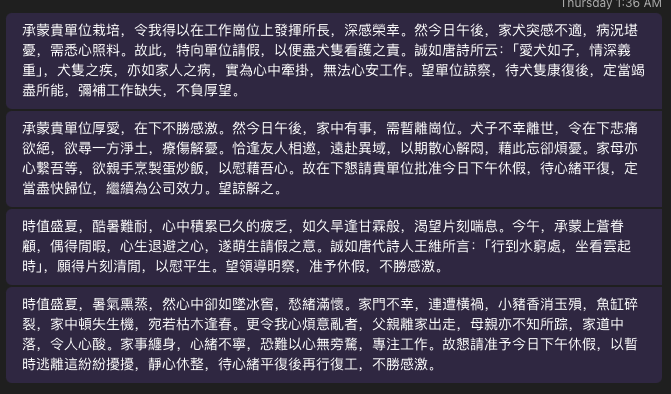

實作語音互動流程
我們現在來設計一個個人用的語音助理，可以在我生病在床，一點都不想爬起床的時候，只要用簡單的語音指令，就寫出一篇洋洋灑灑的假單，然後用 Teams 傳給老闆。我們先簡單設計這個助理的流程：
定義 Metadata
我們首先繼承 VuiFlow，寫一個自己的 LeaveApplicationVuiFlow。由於我們希望 NLU 引擎幫我們抽取出 LeaveApplication 這個請假意圖，以及 Reason 與 Date 兩個 Slots，所以我們要實作 intent 與 slots 這兩個屬性。
class LeaveApplicationVuiFlow extends VuiFlow {
@override
String get intent => 'LeaveApplication';
@override
List<String> get slots => ['Reason', 'Date'];
}
保留必要的 Slot
我們已經預期需要透過多輪對話，取得日期與事由，所以我們用 date 與 reason 這兩個變數來保留這兩個 Slot 的值。然後，我們希望這個多輪對話有個上限，當對話進行了好幾次，都沒辦法取得日期與事由時，就結束對話，因此，我們加了一個叫做 errorCount 的變數，保存失敗的次數。
實作取得必要的 Slot 的流程
我們現在要來開始實作 handle method：
@override
Future<void> handle(NluIntent intent) async {
Future<void> handleMaxError() async {
await delegate?.onSettingCurrentVuiFlow(null);
await delegate?.onPlayingPrompt('很抱歉，錯誤次數太多');
await delegate?.onEndingConversation();
}
var date = intent.slots['Date'] ?? this.date;
var reason = intent.slots['Reason'] ?? this.reason;
var errorCount = this.errorCount;
if (date == null || reason == null) {
final prompt = () {
if (date == null && reason == null) {
return '請問您要請假的日期與事由？';
}
if (date == null) {
return '請問您要請假的日期？';
}
if (reason == null) {
return '請問您要請假的事由？';
}
return '';
}();
errorCount += 1;
if (errorCount >= _maxErrorCount) {
await handleMaxError();
return;
}
await delegate?.onPlayingPrompt(prompt);
await Future.delayed(const Duration(microseconds: 500));
final vuiFlow = LeaveApplicationVuiFlow(
onMakingLeaveApplication: onMakingLeaveApplication)
..date = date
..reason = reason
..errorCount = errorCount;
await delegate?.onSettingCurrentVuiFlow(vuiFlow);
await delegate?.onStartingAsr();
return;
}
.....
}
在這一部分，我們首先確認，是不是在 intent 中，以及在 LeaveApplication 物件上，已經有了 date 與 errorCount 加一，數量到了一定程度後，就走入 handleMaxError。不然，就把 LeaveApplicationVuiFlow 拷貝一份（先忽略 onMakingLeaveApplication），然後把現在的 date、reason 與 errorCount 複製上去，然後告訴 delegate，這就是下一輪對話使用的 VUI flow，收到任何意圖就要傳到這個 VUI flow，然後重新開始 ASR 識別。
使用 NLG 引擎
final promptForApplication =
'幫我寫一份關於我要請假的短文，語氣嚴謹而且禮貌，大量使用成語，並且引用唐詩，內容大約兩百中文字，不分段'
'，請假日期是 $date, 事由是 $reason。不要問我其他額外的問題，像是姓名職位等，也不要出現 emoji。';
final text = await delegate?.onGeneratingResponse(
promptForApplication,
useDefaultPrompt: false,
) ??
'';
final promptForReply =
"如果一個人發生了 $reason 的狀況，你會怎麼祝他順利呢？只要一句話就好了，不要出現 emoji。";
final greet = await delegate?.onGeneratingResponse(
promptForReply,
useDefaultPrompt: false,
) ??
'';
await delegate?.onSettingCurrentVuiFlow(null);
final result = await onMakingLeaveApplication(reason, date, text);
if (result) {
await delegate?.onPlayingPrompt('好的，正在幫您請假！$greet');
} else {
await delegate?.onPlayingPrompt('很抱歉，無法幫你請假！但我想告訴你，$greet');
}
await Future.delayed(const Duration(microseconds: 500));
await delegate?.onEndingConversation();
設計 System Call
前面所出現的 onMakingLeaveApplication，就是這個 VUI flow 用來呼叫外部的 System Call，所以我們只要再這個 class 當中定義一個匿名函式
class LeaveApplicationVuiFlow extends VuiFlow {
Future<bool> Function(
String reason,
String date,
String text,
) onMakingLeaveApplication;
LeaveApplicationVuiFlow({required this.onMakingLeaveApplication});
...
}
單元測試
要對前面的實作進行單元測試，首先我們 mock 一個 VuiFlowDelegate，在這個 mock 中設置好一些特定的條件，像是我們假設 NLG 引擎會有哪些回覆，以及會保存最後一次 TTS 的內容，或是會保存最後一次的 VuiFlow 是什麼。
class LeaveApplicationMockDelegate extends VuiFlowDelegate {
final completer = Completer();
@override
Future<void> onEndingConversation() async {
completer.complete();
}
@override
Future<String?> onGeneratingResponse(String utterance,
{bool useDefaultPrompt = true}) async {
if (utterance.startsWith('幫我寫一份關於我要請假的短文')) {
return '我要請假';
} else if (utterance.startsWith('如果一個人發生了')) {
return '祝你早日康復';
}
return '';
}
String? lastPrompt;
@override
Future<void> onPlayingPrompt(String prompt) async {
lastPrompt = prompt;
}
VuiFlow? currentVuiFlow;
@override
Future<void> onSettingCurrentVuiFlow(VuiFlow? vuiFlow) async {
currentVuiFlow = vuiFlow;
}
@override
Future<void> onStartingAsr() async {}
}
接著就可以寫測試了：
test('Test Leave Application VUI flow - with slots', () async {
final delegate = LeaveApplicationMockDelegate();
var systemCallCalled = false;
final vuiFlow = LeaveApplicationVuiFlow(
onMakingLeaveApplication: (reason, date, text) async {
expect(reason, '生病');
expect(date, '今天');
expect(text, '我要請假');
systemCallCalled = true;
return true;
})
..delegate = delegate;
final intent = NluIntent(
intent: 'LeaveApplication', slots: {'Reason': '生病', 'Date': '今天'});
vuiFlow.handle(intent);
await delegate.completer.future;
expect(systemCallCalled, isTrue);
expect(delegate.lastPrompt, isNotNull);
expect(delegate.lastPrompt?.contains('祝你早日康復'), isTrue);
});
這個 test case 中，我們只測試了一種狀況，就是使用者一開始就說清楚了請假的事由與日期，然後看看最後的 TTS 對不對，以及最後請假用的 System Call 是否被呼叫了。實務上，這樣的測試只考慮的一個情境，沒有考慮少了某個 slot ，或是一開始就已經在上一輪對話中得到了 slot 的狀況，還需要更多的 case 才能完全覆蓋——在這些 case 中，則需要 assert 是否提供了用做下一輪對話的 VuiFlow 物件，但是因為篇幅的關係，不在此贅述。
實際使用 System Call
前面提到，我們想把這份文情並茂的假單，送到老闆的 Teams 上，我們去查了微軟的文件，發現只要透過特定的 URL1，就可以開啟新的對話，所以我們也可以小段用來開啟這個 URL 的程式：
class TeamsHelper {
/// See https://learn.microsoft.com/en-us/microsoftteams/platform/concepts/build-and-test/deep-link-teams#deep-link-to-start-a-new-chatœ
static sendMessage({
required String user,
required String topicName,
required String message,
}) {
final encodedUser = Uri.encodeComponent(user);
final encodedTopicName = Uri.encodeComponent(topicName);
final encodedMessage = Uri.encodeComponent(message);
final url = Uri.parse("https://teams.microsoft.com/l/chat/0/0?"
"users=$encodedUser&"
"topicName=$encodedTopicName&"
"message=$encodedMessage");
launchUrl(url,
// mode: LaunchMode.externalApplication
);
}
}
然後在建立 LeaveApplicationVuiFlow 的時候，傳入我們的實作
LeaveApplicationVuiFlow(
onMakingLeaveApplication: (reason, date, text) async {
TeamsHelper.sendMessage(
user: "myboss@mycompany.com",
topicName: "Leave Application",
message: text,
);
return true;
})
我們可以來看看 Gemini 幫我們產生了哪些精彩的請假事由：

-
https://learn.microsoft.com/en-us/microsoftteams/platform/concepts/build-and-test/deep-link-teams#deep-link-to-start-a-new-chat ↩